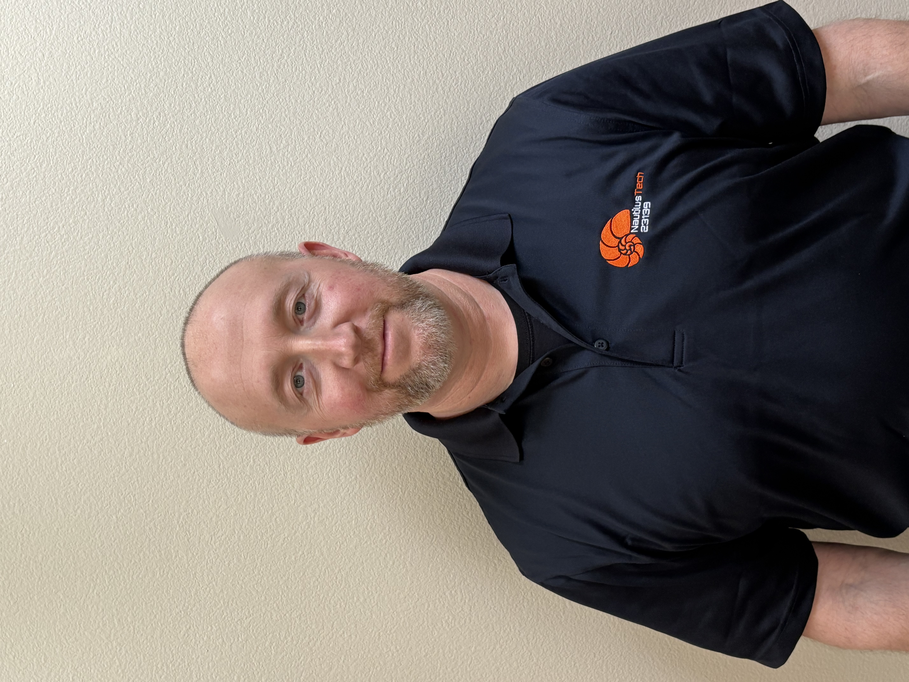
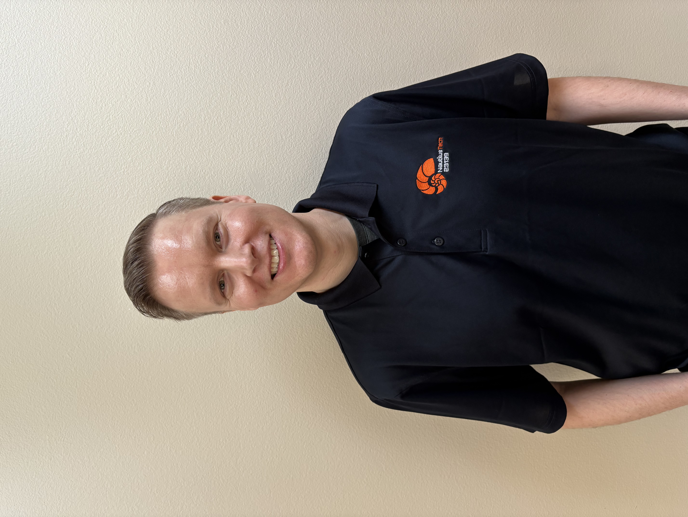
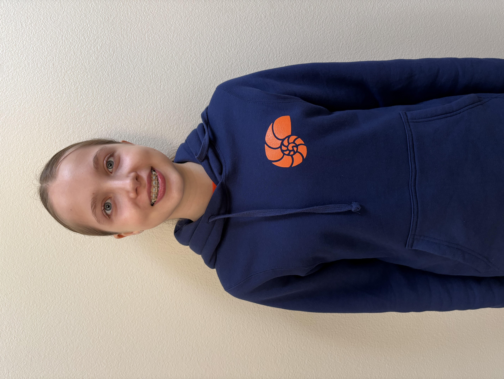
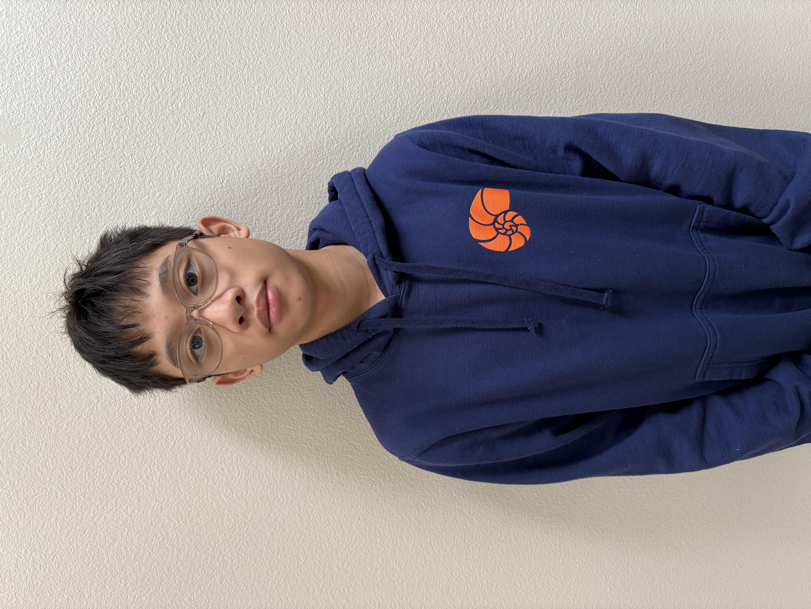
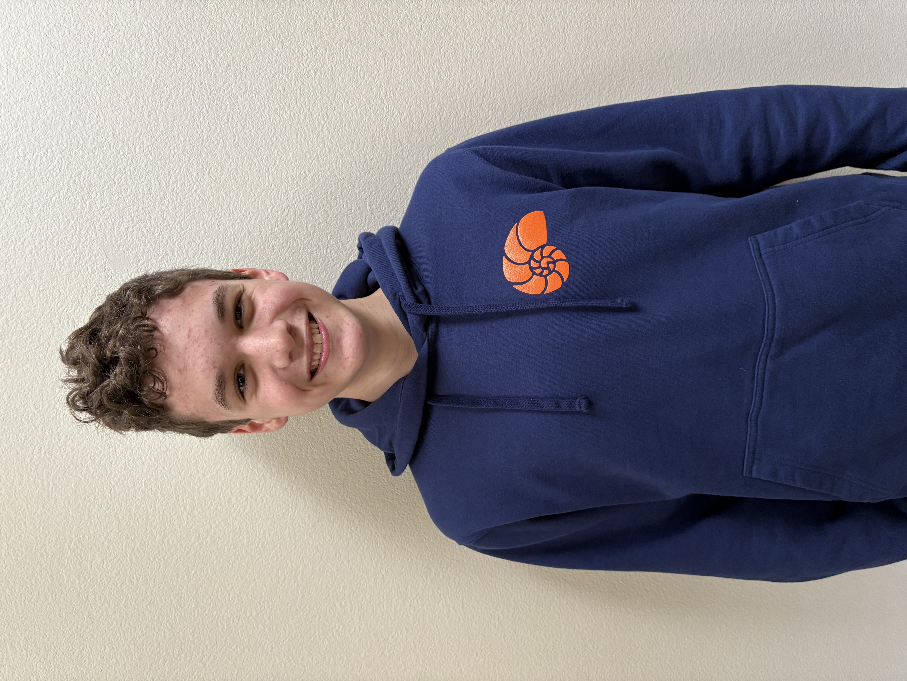
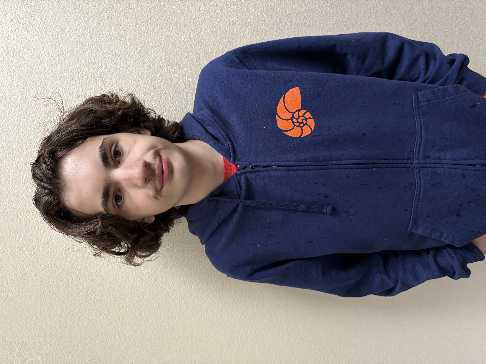
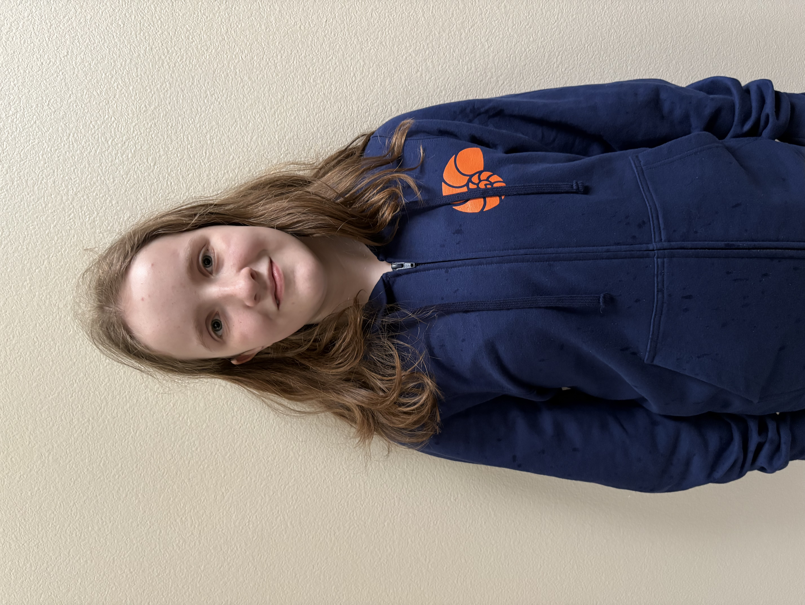
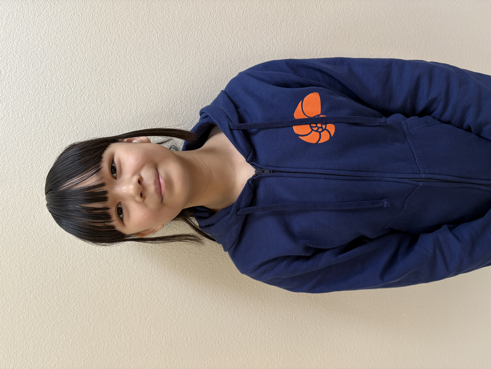
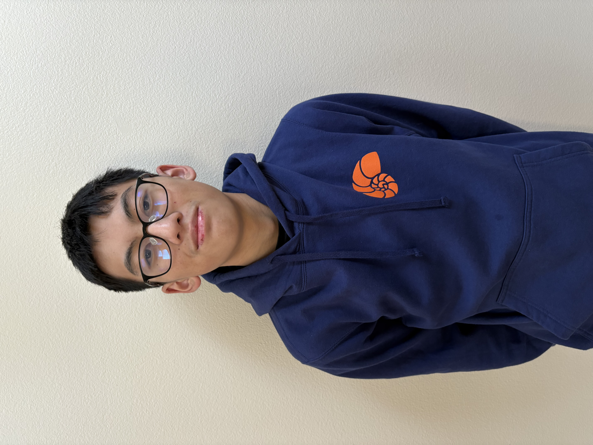
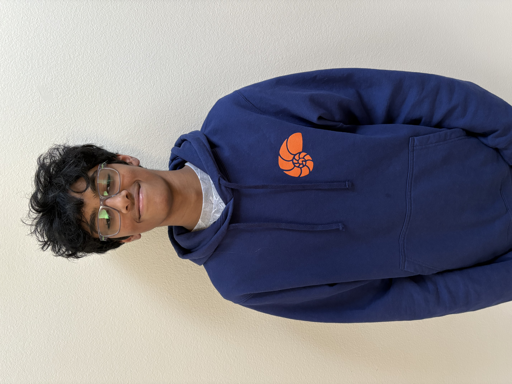

I am the head coach for FTC team 23139 NautilusTech. My passion for exploring the field of robotics and mentoring youth began more than 25 years ago while I was in high school and college. When I was a senior in high school, I attended a pre-engineering program run through the Capital Center (now the Beaverton Academy of Science and Engineering). There I met industry professionals who showed me how exciting the field of engineering can be. I was inspired by their energy and encouragement. Some of the professionals I met at that time were actively involved in establishing the organization that would become ORTOP. I admired their dedication to bringing out the best in our local youth.
Those industry professionals gave me confidence to pursue challenging projects. They provided me with opportunities to obtain practical experiences over time so I could build on my technical skills. They provided me with guidance so I could successfully navigate difficult problems. And they taught me the importance of sharing what you have with others who don't have the same access to resources.
These early lessons helped to shape many of the important personal qualities that I value most today. Now it is my ambition to build on what they started by working hard to inspire youth in my own way. At NautilusTech, we show people how to be successful through hard work, cooperation, doing your best, and helping others. Our team strives to create new opportunities for young people so they can explore their own potential, generate positive impact within the community, and have a whole lot of fun along the way.

Mike is a Senior Director of Engineering at MKS Inc., where he leads complex engineering organizations and drives the development of advanced manufacturing systems. With more than two decades of experience in systems engineering, software, and product leadership, he brings real-world engineering practices to FTC coaching. Mike emphasizes structured design, iteration based on testing and data, and strong collaboration to help students turn creative ideas into reliable, high-performing robots.
I am a co-captain of NautilusTech and have been with the team for 7 years. I specialize in fields of design and building the robot, and have also helped with outreach in the form of communication with other teams as well as companies and the community. I am always looking out to make a meaningful impact in the community where I can, and have used robotics as a way to do this. Outside of robotics, I enjoy sports such as swimming and tennis and also am heavily involved in music and the band program.

Hi, I'm Ellie, a co-captain who's been a part of NautilusTech for 7 years. I specialize in designing and fabricating our robots. Additionally, I'm the project manager and lead editor of our Engineering Portfolio, which is one of the media we use to share our accomplishments with FTC judges and people like you! Outside of NautilusTech, I'm highly involved in science expos and other engineering projects. Most recently, I worked with a small team to develop an affordable and accessible phosphate filter to help reduce harmful algal blooms. I'm currently exploring whether Pleurotus ostreatus can be utilized to break down 6PPD-quinone, a toxic tire chemical that's lethal to coho salmon. I'm also a dedicated cross-country and track athlete and enjoy playing the piano in my free time.

I'm the build lead for NautilusTech and specialize in management of prototyping, designing and iterating on designs on the robot (aka the engineering design process). I am always looking for ways to improve on designs on the robot and get much joy from seeing the robot improve over time. Outside of robotics, I enjoy sports such as soccer and tennis and also enjoy gaming with friends.

I am the CAD/design lead for NautilusTech and have been with the team for 7 years. I specialize in designing and building the robot on the CAD software onshape. I love to help out around the team. Outside of robotics, I enjoy sports such as swimming and tennis.

Hi! I'm the programming lead for NautilusTech and this is currently my second year with FIRST! I'm very passionate about programming and do a lot of it outside of FIRST. I'm really interested in computers and their internal workings and spend a lot of my spare time designing and implementing my own computer architectures. I love working with assembly and HDL's (Hardware Description Languages) on my FPGA's (Field Programmable Gate Arrays) when I have time. Other than that, I love working with physical tech, whether it be repairing devices, or soldering PCB's.

Hi, I'm Charlotte, I'm a programmer focusing on autonomous and this is my second year on the team. The programming languages I know are Java (the language we use to program our robot), HTML, CSS, Javascript (all three are web design), and Python, although I would love to learn more. I also designed and created this website. In addition to robotics, I enjoy singing in choir, playing board games, learning and doing math, figure skating, watching and performing magic, and folding origami. I am currently trying to learn tablet weaving (an ancient form of weaving ribbons), and bookbinding.

I'm a first year coder on the team and mostly does basic coding for the robot and focuses on skill building. I also code and research miscellaneous sensors/systems. I don't have a lot of experience with robotics or code, but I'm very interested and willing to learn. Most of my coding experience comes from school because I did a lot of tech related electives. Some of it also comes from python tutorials that I did during the summer. I'm also interested in graphic design. In my spare time, I like to read, draw humans (mostly), and write light novels. I look forward to gaining coding experience on this team, as well as learn how team-based projects in the engineering department work.

Hi, my name is Lennon. I specialize in marketing and branding our team. I have been part of this team for seven years. I can also occasionally assist with some building work. I believe that inclusion and positivity are very important in everything. I aim to help people overcome their struggles and make them more confident in what they want to do. Aside from the FTC, I enjoy playing basketball and video games.

I am the social media manager of NautilusTech, I have been on this team for 2 years. I'm passionate about building, and advertising our team and making our team more known to the community. I like to make innovative and entertaining Instagram posts for the team, and help out the build team when I can. Outside of FTC I enjoy Basketball, Racquetball, watching football, and playing the piano.
This is my rookie season on NautilusTech. I am part of the marketing team and build team, I am learning CAD and CNC. I love playing multiple sports such as soccer, football and golf, I love doing music and have learned many instruments. I love working with computers and doing computer designing like posters and websites
More information will be added once we ask permission
More information will be added once we ask permission
More information will be added once we ask permission